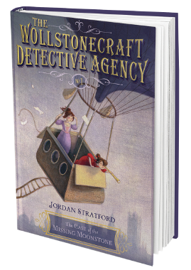
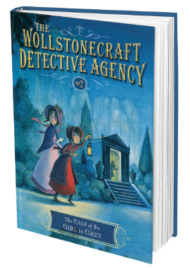
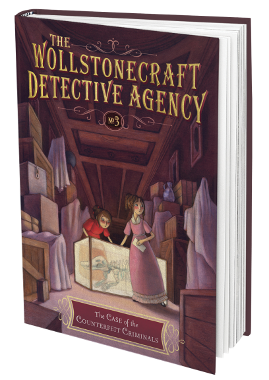
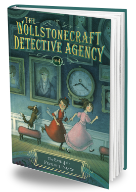

The Wollstonecraft Detective Agency game is based on the award-winning book series by Jordan Stratford. Look for all the books in the series!

1. The Case of the Missing Moonstone
{kind=link}
History, mystery, and science collide in a new series for middle-grade readers, perfect for fans of The Mysterious Benedict Society and Lemony Snicket!
Jordan Stratford imagines an alternate 1826, where Ada Lovelace (the world's first computer programmer) and Mary Shelley (author of Frankenstein) meet as girls and form a secret detective agency!
- “This is a winner.” —School Library Journal
2. The Case of the Girl in Grey
{kind=link}
This history-mystery series continues with another fine display of brains and bravery from the Wollstonecraft Girls—Ada Bryon Lovelace and Mary Shelley. Inspired fun for middle grade readers and fans of The Mysterious Benedict Society and Lemony Snicket!
The Wollstonecraft Detective Agency was supposed to be a secret constabulary, but after the success of their first case, all of London knows that Lady Ada and Mary are the girls to go to if you have a problem.
3. The Case of the Counterfeit Criminals
{kind=link}
This “winner” (School Library Journal) of a history-mystery-science series continues as the Wollstonecraft Detectives—Ada Byron Lovelace and Mary Shelley—take on a case from the celebrated dinosaur bone hunter, Mary Anning.
- “An enjoyable plot, resourceful heroines and fun writing.” — Wall Street Journal
4. The Case of the Perilous Palace
{kind=link}
The history-mystery-science series concludes as the Wollstonecraft Detectives—Ada Byron Lovelace and Mary Shelley—take on a case by royal request.
Ada's imperious grandmother has absolutely shut the Wollstonecraft Detective Agency down—until they get a case from a princess, that is.
The Wollstonecraft Detective Agency
© Hololabs Studio Inc., 2020